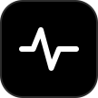

0:000:00
—
—
--:--

Один раз установите домашний сертификат этого ПК — и панель будет открываться по HTTPS без предупреждений, а музыкой можно будет управлять. Сертификат действует только для адресов домашней сети.
На ПК откройте PulseDeck → Телефон → Показать код, выберите «Браузер» и наведите камеру на QR-код — или введите 6 цифр.
После подключения этот телефон запомнится — код больше не понадобится. Отключить его можно на ПК: «Телефон» → «Отозвать».